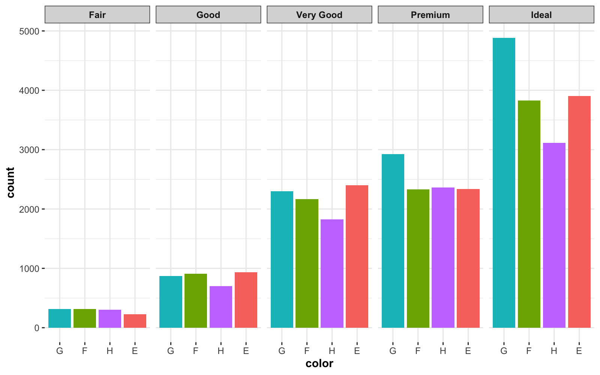

Retirement
This package is no longer under active development and no new functionality will be added. You should instead be using group_map(), group_modify() and group_walk() functions from dplyr. See: https://dplyr.tidyverse.org/reference/group_map.html
This is for two reasons-
dplyr 0.8.1introducedgroup_map(),group_modify()andgroup_walk()functions that can be used to iterate on grouped dataframes. So if you want to dogrouped_operations, I would highly recommend using these functions overgroupedstatsfunctions since the former are much more general, efficient, and faster than the latter. For more, see: https://dplyr.tidyverse.org/reference/group_map.htmlThere are more general versions of these functions introduced in
broomExtrapackage:grouped_tidy,grouped_augment,grouped_glance. For more, see: https://indrajeetpatil.github.io/broomExtra/reference/index.html#section-grouped-variants-of-generics
Overview
groupedstats package provides a collection of functions to run statistical operations on multiple variables across multiple grouping variables in a dataframe. This is a common situation, as illustrated by few example cases-
If you have combined multiple studies in a single dataframe and want to run a common operation (e.g., linear regression) on each study. In this case, column corresponding to
studywill be the grouping variable.If you have multiple groups in your dataframe (e.g., clinical disorder groups and controls group) and you want to carry out the same operation for each group (e.g., planned t-test to check for differences in reaction time in condition 1 versus condition 2 for both groups). In this case,
groupwill be the grouping variable.If you have multiple conditions in a given study (e.g., six types of videos participants saw) and want to run a common operation between different measures of interest for each condition (e.g., correlation between subjective rating of emotional intensity and reaction time).
Combination of all of the above.
Installation
To get the latest, stable CRAN release:
install.packages("groupedstats")You can get the development version of the package from GitHub. To see what new changes (and bug fixes) have been made to the package since the last release on CRAN, you can check the detailed log of changes here: https://indrajeetpatil.github.io/groupedstats/news/index.html
If you are in hurry and want to reduce the time of installation, prefer-
# needed package to download from GitHub repo
# install.packages("remotes")
remotes::install_github(
repo = "IndrajeetPatil/groupedstats", # package path on GitHub
quick = TRUE
) # skips docs, demos, and vignettesIf time is not a constraint-
remotes::install_github(
repo = "IndrajeetPatil/groupedstats", # package path on GitHub
dependencies = TRUE, # installs packages which groupedstats depends on
upgrade_dependencies = TRUE # updates any out of date dependencies
)Citation
If you want to cite this package in a scientific journal or in any other context, run the following code in your R console:
citation("groupedstats")
#>
#> Patil I (2018). _groupedstats: Grouped Statistical Analyses in a Tidy
#> Way_. doi: 10.5281/zenodo.2600159 (URL:
#> https://doi.org/10.5281/zenodo.2600159), <URL:
#> https://CRAN.R-project.org/package=groupedstats>.
#>
#> A BibTeX entry for LaTeX users is
#>
#> @Manual{,
#> title = {groupedstats: Grouped Statistical Analyses in a Tidy Way},
#> author = {Indrajeet Patil},
#> year = {2018},
#> url = {https://CRAN.R-project.org/package=groupedstats},
#> doi = {10.5281/zenodo.2600159},
#> }Usage
Below is a short introduction to the currently available functions in this package:
grouped_ versions of broom generic functions
These functions are re-exported from broomExtra package and provide the most general versions of grouped_ functions.
Here is an example
# for reproducibility
set.seed(123)
# running glm across two all combinations of two grouping variables
groupedstats::grouped_tidy(
data = ggstatsplot::Titanic_full, # dataframe
grouping.vars = c(Class, Age), # grouping variables
..f = stats::glm, # function to execute
# additional arguments passed to `..f`
formula = Survived ~ Sex,
family = stats::binomial(link = "logit")
)
#> # A tibble: 14 x 7
#> Class Age term estimate std.error statistic p.value
#> <fct> <fct> <chr> <dbl> <dbl> <dbl> <dbl>
#> 1 1st Adult (Intercept) 3.56e+ 0 0.507 7.01e+ 0 2.36e-12
#> 2 1st Adult SexMale -4.28e+ 0 0.532 -8.05e+ 0 8.36e-16
#> 3 1st Child (Intercept) -2.46e+ 1 131011. -1.88e- 4 1.00e+ 0
#> 4 1st Child SexMale -1.74e-15 143515. -1.21e-20 1 e+ 0
#> 5 2nd Adult (Intercept) 1.82e+ 0 0.299 6.08e+ 0 1.23e- 9
#> 6 2nd Adult SexMale -4.21e+ 0 0.409 -1.03e+ 1 6.79e-25
#> 7 2nd Child (Intercept) -2.56e+ 1 59908. -4.27e- 4 1.00e+ 0
#> 8 2nd Child SexMale -7.14e-15 88489. -8.07e-20 1 e+ 0
#> 9 3rd Adult (Intercept) -1.58e- 1 0.156 -1.01e+ 0 3.12e- 1
#> 10 3rd Adult SexMale -1.48e+ 0 0.201 -7.39e+ 0 1.51e-13
#> 11 3rd Child (Intercept) -1.94e- 1 0.361 -5.38e- 1 5.91e- 1
#> 12 3rd Child SexMale -7.96e- 1 0.486 -1.64e+ 0 1.01e- 1
#> 13 Crew Adult (Intercept) 1.90e+ 0 0.619 3.06e+ 0 2.18e- 3
#> 14 Crew Adult SexMale -3.15e+ 0 0.625 -5.04e+ 0 4.68e- 7For more examples, see: https://indrajeetpatil.github.io/broomExtra/reference/index.html#section-grouped-variants-of-generics
grouped_summary
Getting summary for multiple variables across multiple grouping variables. This function is a wrapper around skimr::skim_to_wide(). It is supposed to be a handy summarizing tool if you have multiple grouping variables and multiple variables for which summary statistics are to be computed-
# for reproducibility
set.seed(123)
library(datasets)
options(tibble.width = Inf) # show me all columns
# note that this dataset has NAs
groupedstats::grouped_summary(
data = ggplot2::msleep,
grouping.vars = vore,
measures = sleep_total:awake,
measures.type = "numeric"
)
#> # A tibble: 20 x 16
#> vore skim_type skim_variable missing complete mean sd min p25
#> <fct> <chr> <chr> <int> <dbl> <dbl> <dbl> <dbl> <dbl>
#> 1 carni numeric sleep_total 0 1 10.4 4.67 2.7 6.25
#> 2 carni numeric sleep_rem 9 0.526 2.29 1.86 0.1 1.33
#> 3 carni numeric sleep_cycle 14 0.263 0.373 0.0325 0.333 0.35
#> 4 carni numeric awake 0 1 13.6 4.68 4.6 11
#> 5 herbi numeric sleep_total 0 1 9.51 4.88 1.9 4.3
#> 6 herbi numeric sleep_rem 8 0.75 1.37 0.922 0.4 0.6
#> 7 herbi numeric sleep_cycle 20 0.375 0.418 0.324 0.117 0.183
#> 8 herbi numeric awake 0 1 14.5 4.88 7.4 9.78
#> 9 insecti numeric sleep_total 0 1 14.9 5.92 8.4 8.6
#> 10 insecti numeric sleep_rem 1 0.8 3.52 1.93 2 2.08
#> 11 insecti numeric sleep_cycle 2 0.6 0.161 0.0419 0.117 0.142
#> 12 insecti numeric awake 0 1 9.06 5.92 4.1 4.3
#> 13 omni numeric sleep_total 0 1 10.9 2.95 8 9.1
#> 14 omni numeric sleep_rem 2 0.9 1.96 1.01 0.7 1.25
#> 15 omni numeric sleep_cycle 9 0.55 0.592 0.473 0.133 0.258
#> 16 omni numeric awake 0 1 13.1 2.95 6 13.1
#> 17 <NA> numeric sleep_total 0 1 10.2 3.00 5.4 8.65
#> 18 <NA> numeric sleep_rem 2 0.714 1.88 0.847 0.5 1.8
#> 19 <NA> numeric sleep_cycle 6 0.143 0.183 NA 0.183 0.183
#> 20 <NA> numeric awake 0 1 13.8 3.00 10.3 11.8
#> median p75 max n std.error mean.conf.low mean.conf.high
#> <dbl> <dbl> <dbl> <int> <dbl> <dbl> <dbl>
#> 1 10.4 13 19.4 19 1.07 8.13 12.6
#> 2 1.95 3.05 6.6 10 0.589 0.958 3.62
#> 3 0.383 0.383 0.417 5 0.0145 0.333 0.414
#> 4 13.6 17.8 21.4 19 1.07 11.4 15.9
#> 5 10.3 14.2 16.6 32 0.862 7.75 11.3
#> 6 0.95 1.98 3.4 24 0.188 0.977 1.76
#> 7 0.217 0.692 1 12 0.0936 0.212 0.624
#> 8 13.7 19.7 22.1 32 0.862 12.7 16.2
#> 9 18.1 19.7 19.9 5 2.65 7.59 22.3
#> 10 3 4.45 6.1 4 0.963 0.460 6.59
#> 11 0.167 0.183 0.2 3 0.0242 0.0569 0.265
#> 12 5.9 15.4 15.6 5 2.65 1.71 16.4
#> 13 9.9 10.9 18 20 0.659 9.54 12.3
#> 14 1.85 2.3 4.9 18 0.239 1.45 2.46
#> 15 0.5 0.708 1.5 11 0.143 0.274 0.911
#> 16 14.1 14.9 16 20 0.659 11.7 14.5
#> 17 10.6 12.2 13.7 7 1.14 7.41 13.0
#> 18 2 2.4 2.7 5 0.379 0.829 2.93
#> 19 0.183 0.183 0.183 1 NA NaN NaN
#> 20 13.4 15.4 18.6 7 1.14 11.0 16.6This function can be used to get summary of either numeric or factor variables, but not both. This is by design. If no measures are specified, the function will compute summary for all variables of the specified type (numeric or factor).
If you want summary of variables of factor type-
# for reproducibility
set.seed(123)
library(ggplot2)
options(tibble.width = Inf) # show me all columns
groupedstats::grouped_summary(
data = ggplot2::diamonds,
grouping.vars = c(cut, clarity),
measures = color,
measures.type = "factor"
)
#> # A tibble: 40 x 10
#> cut clarity skim_type skim_variable missing complete ordered n_unique
#> <ord> <ord> <chr> <chr> <int> <dbl> <lgl> <int>
#> 1 Fair I1 factor color 0 1 TRUE 7
#> 2 Fair SI2 factor color 0 1 TRUE 7
#> 3 Fair SI1 factor color 0 1 TRUE 7
#> 4 Fair VS2 factor color 0 1 TRUE 7
#> 5 Fair VS1 factor color 0 1 TRUE 7
#> 6 Fair VVS2 factor color 0 1 TRUE 7
#> 7 Fair VVS1 factor color 0 1 TRUE 7
#> 8 Fair IF factor color 0 1 TRUE 3
#> 9 Good I1 factor color 0 1 TRUE 7
#> 10 Good SI2 factor color 0 1 TRUE 7
#> top_counts n
#> <chr> <int>
#> 1 G: 53, H: 52, F: 35, I: 34 210
#> 2 H: 91, F: 89, G: 80, E: 78 466
#> 3 F: 83, H: 75, G: 69, E: 65 408
#> 4 F: 53, G: 45, E: 42, H: 41 261
#> 5 G: 45, F: 33, H: 32, I: 25 170
#> 6 G: 17, E: 13, H: 11, F: 10 69
#> 7 F: 5, D: 3, E: 3, G: 3 17
#> 8 F: 4, D: 3, G: 2, E: 0 9
#> 9 E: 23, F: 19, G: 19, H: 14 96
#> 10 D: 223, E: 202, F: 201, G: 163 1081
#> # … with 30 more rowsNote that there is a column corresponding to top_counts which is really useful in case you, let’s say, want to plot these counts. But this column is of character type and in wide format. The solution is to use an additional argument provided for this function:
# for reproducibility
set.seed(123)
library(ggplot2)
library(magrittr)
options(tibble.width = Inf) # show me all columns
# dataframe with counts
(df <- groupedstats::grouped_summary(
data = ggplot2::diamonds,
grouping.vars = cut, # for simplicity, let's just use one grouping variable
measures = color,
measures.type = "factor",
topcount.long = TRUE
))
#> # A tibble: 20 x 3
#> cut factor.level count
#> <ord> <chr> <int>
#> 1 Fair G 314
#> 2 Fair F 312
#> 3 Fair H 303
#> 4 Fair E 224
#> 5 Good E 933
#> 6 Good F 909
#> 7 Good G 871
#> 8 Good H 702
#> 9 Very Good E 2400
#> 10 Very Good G 2299
#> 11 Very Good F 2164
#> 12 Very Good H 1824
#> 13 Premium G 2924
#> 14 Premium H 2360
#> 15 Premium E 2337
#> 16 Premium F 2331
#> 17 Ideal G 4884
#> 18 Ideal E 3903
#> 19 Ideal F 3826
#> 20 Ideal H 3115
# plot
ggplot2::ggplot(
data = df,
mapping = ggplot2::aes(
x = forcats::fct_inorder(f = factor.level),
y = count,
fill = factor.level
)
) +
ggplot2::geom_bar(stat = "identity") +
ggplot2::labs(x = "color", y = "count") +
ggplot2::facet_grid(facets = ~cut) + # for each level of the factor level
ggstatsplot::theme_ggstatsplot() +
ggplot2::theme(legend.position = "none")
This produces a long format table with two new columns factor.level and its corresponding count, which can then be immediately fed into other pipelines,
e.g., preparing a plot of mean and sd values in ggplot2).
# for reproducibility
set.seed(123)
options(tibble.width = Inf) # show me all columns
groupedstats::grouped_summary(
data = ggplot2::diamonds,
grouping.vars = c(cut, clarity)
)
#> # A tibble: 280 x 17
#> cut clarity skim_type skim_variable missing complete mean sd
#> <ord> <ord> <chr> <chr> <int> <dbl> <dbl> <dbl>
#> 1 Fair I1 numeric carat 0 1 1.36 0.745
#> 2 Fair I1 numeric depth 0 1 65.7 3.10
#> 3 Fair I1 numeric table 0 1 58.1 2.87
#> 4 Fair I1 numeric price 0 1 3704. 3099.
#> 5 Fair I1 numeric x 0 1 6.72 1.11
#> 6 Fair I1 numeric y 0 1 6.62 1.13
#> 7 Fair I1 numeric z 0 1 4.39 0.756
#> 8 Fair SI2 numeric carat 0 1 1.20 0.501
#> 9 Fair SI2 numeric depth 0 1 64.4 3.16
#> 10 Fair SI2 numeric table 0 1 58.8 3.68
#> min p25 median p75 max n std.error mean.conf.low
#> <dbl> <dbl> <dbl> <dbl> <dbl> <int> <dbl> <dbl>
#> 1 0.34 0.85 1.06 1.82 5.01 210 0.0514 1.26
#> 2 55.6 64.7 66.0 67.3 78.2 210 0.214 65.3
#> 3 52 56 58 59 67 210 0.198 57.7
#> 4 584 1387. 2397 5614. 18531 210 214. 3282.
#> 5 4.72 5.96 6.56 7.46 10.7 210 0.0769 6.57
#> 6 4.6 5.82 6.42 7.38 10.5 210 0.0777 6.47
#> 7 2.6 3.77 4.22 4.86 6.98 210 0.0522 4.28
#> 8 0.25 0.9 1.01 1.5 3.01 466 0.0232 1.16
#> 9 53.1 64.5 65.1 65.9 72.2 466 0.147 64.1
#> 10 50.1 56 58 60 79 466 0.171 58.5
#> mean.conf.high
#> <dbl>
#> 1 1.46
#> 2 66.1
#> 3 58.5
#> 4 4125.
#> 5 6.87
#> 6 6.78
#> 7 4.49
#> 8 1.25
#> 9 64.7
#> 10 59.2
#> # … with 270 more rows
grouped_slr
This function can be used to run simple linear regression (slr) between different pairs of variables across multiple levels of grouping variable(s). For example, we can use the gapminder dataset to study two relationships of interest for each country across years:
life expectancy and GDP (per capita)
population GDP (per capita) Thus, in this case we have two regression models and one grouping variable with 142 levels (countries)
# for reproducibility
set.seed(123)
library(gapminder)
options(tibble.width = Inf) # show me all columns
groupedstats::grouped_slr(
data = gapminder::gapminder,
dep.vars = c(lifeExp, pop),
indep.vars = c(gdpPercap, gdpPercap),
grouping.vars = country
)
#> # A tibble: 284 x 9
#> country formula t.value estimate conf.low conf.high std.error
#> <fct> <chr> <dbl> <dbl> <dbl> <dbl> <dbl>
#> 1 Afghanistan lifeExp ~ gdpPercap -0.151 -0.0475 -0.751 0.656 0.316
#> 2 Albania lifeExp ~ gdpPercap 4.84 0.837 0.452 1.22 0.173
#> 3 Algeria lifeExp ~ gdpPercap 6.71 0.904 0.604 1.21 0.135
#> 4 Angola lifeExp ~ gdpPercap -0.998 -0.301 -0.973 0.371 0.302
#> 5 Argentina lifeExp ~ gdpPercap 4.74 0.832 0.440 1.22 0.176
#> 6 Australia lifeExp ~ gdpPercap 19.0 0.986 0.871 1.10 0.0519
#> 7 Austria lifeExp ~ gdpPercap 26.5 0.993 0.910 1.08 0.0374
#> 8 Bahrain lifeExp ~ gdpPercap 6.45 0.898 0.587 1.21 0.139
#> 9 Bangladesh lifeExp ~ gdpPercap 5.05 0.847 0.473 1.22 0.168
#> 10 Belgium lifeExp ~ gdpPercap 26.1 0.993 0.908 1.08 0.0380
#> p.value significance
#> <dbl> <chr>
#> 1 8.83e- 1 ns
#> 2 6.82e- 4 ***
#> 3 5.33e- 5 ***
#> 4 3.42e- 1 ns
#> 5 7.97e- 4 ***
#> 6 3.52e- 9 ***
#> 7 1.34e-10 ***
#> 8 7.38e- 5 ***
#> 9 5.03e- 4 ***
#> 10 1.56e-10 ***
#> # … with 274 more rowsNotice the order in which the dependent and independent variables are entered; there are two separate regression models being run here: lifeExp ~ gdpPercap and pop ~ gdpPercap If this order is incorrect, the result will also be incorrect. So it is always a good idea to check the formula column to see if you have run the correct linear models. Also, note that the estimates are already standardized, i.e. estimates are standardized regression coefficients (betas, i.e.).
The prior example was with just one grouping variable. This can be done with multiple grouping variables as well. For example, with the diamonds dataset from ggplot2 library, let’s assess the relation between carat and price of a diamond for each type of clarity and cut-
# for reproducibility
set.seed(123)
library(ggplot2)
library(dplyr)
options(tibble.width = Inf) # show me all columns
groupedstats::grouped_slr(
data = ggplot2::diamonds,
dep.vars = price,
indep.vars = carat,
grouping.vars = c(cut, clarity)
) %>%
dplyr::arrange(cut)
#> # A tibble: 40 x 10
#> cut clarity formula t.value estimate conf.low conf.high std.error
#> <ord> <ord> <chr> <dbl> <dbl> <dbl> <dbl> <dbl>
#> 1 Fair VS2 price ~ carat 42.0 0.934 0.890 0.978 0.0222
#> 2 Fair SI2 price ~ carat 69.1 0.955 0.928 0.982 0.0138
#> 3 Fair SI1 price ~ carat 58.9 0.946 0.915 0.978 0.0161
#> 4 Fair I1 price ~ carat 58.7 0.971 0.939 1.00 0.0165
#> 5 Fair VVS1 price ~ carat 8.58 0.911 0.685 1.14 0.106
#> 6 Fair VS1 price ~ carat 36.6 0.943 0.892 0.994 0.0257
#> 7 Fair IF price ~ carat 8.22 0.952 0.678 1.23 0.116
#> 8 Fair VVS2 price ~ carat 13.6 0.857 0.732 0.983 0.0629
#> 9 Good VS1 price ~ carat 74.0 0.946 0.921 0.971 0.0128
#> 10 Good SI2 price ~ carat 103. 0.953 0.934 0.971 0.00926
#> p.value significance
#> <dbl> <chr>
#> 1 1.55e-117 ***
#> 2 1.96e-246 ***
#> 3 4.58e-201 ***
#> 4 1.86e-131 ***
#> 5 3.59e- 7 ***
#> 6 5.40e- 82 ***
#> 7 7.67e- 5 ***
#> 8 5.54e- 21 ***
#> 9 9.62e-318 ***
#> 10 0 ***
#> # … with 30 more rowsA more general version of this function (grouped_lm) will be implemented in future that will utilize the formula interface of stats::lm.
grouped_lm
A more general version of simple linear regression is stats::lm, implemented in grouped_lm:
# for reproducibility
set.seed(123)
library(groupedstats)
groupedstats::grouped_lm(
data = mtcars,
grouping.vars = cyl, # grouping variable (just one in this case)
formula = mpg ~ am * wt, # note that this function takes a formula
output = "tidy" # tidy dataframe containing results
)
#> # A tibble: 12 x 9
#> cyl term estimate std.error statistic p.value conf.low conf.high
#> <dbl> <chr> <dbl> <dbl> <dbl> <dbl> <dbl> <dbl>
#> 1 4 (Intercept) 13.9 16.1 0.865 0.416 -24.1 51.9
#> 2 4 am 30.3 17.2 1.77 0.121 -10.3 70.9
#> 3 4 wt 3.07 5.44 0.564 0.590 -9.79 15.9
#> 4 4 am:wt -11.0 6.16 -1.78 0.118 -25.5 3.61
#> 5 6 (Intercept) 63.6 14.1 4.51 0.0204 18.7 109.
#> 6 6 am -41.4 19.0 -2.18 0.117 -102. 19.1
#> 7 6 wt -13.1 4.16 -3.16 0.0511 -26.4 0.113
#> 8 6 am:wt 12.5 6.22 2.02 0.137 -7.26 32.4
#> 9 8 (Intercept) 25.1 3.51 7.14 0.0000315 17.2 32.9
#> 10 8 am -2.92 25.9 -0.113 0.912 -60.5 54.7
#> 11 8 wt -2.44 0.842 -2.90 0.0159 -4.32 -0.563
#> 12 8 am:wt 0.439 7.63 0.0575 0.955 -16.6 17.4
#> significance
#> <chr>
#> 1 ns
#> 2 ns
#> 3 ns
#> 4 ns
#> 5 *
#> 6 ns
#> 7 ns
#> 8 ns
#> 9 ***
#> 10 ns
#> 11 *
#> 12 nsThe same function can also be used to get model summaries instead of a tidy dataframe containing results-
# for reproducibility
set.seed(123)
library(groupedstats)
groupedstats::grouped_lm(
data = ggplot2::diamonds,
grouping.vars = c(cut, color), # grouping variables
formula = price ~ carat * clarity, # formula
output = "glance" # dataframe with model summaries
)
#> # A tibble: 35 x 14
#> cut color r.squared adj.r.squared sigma statistic p.value df logLik
#> <ord> <ord> <dbl> <dbl> <dbl> <dbl> <dbl> <dbl> <dbl>
#> 1 Fair D 0.915 0.906 1005. 106. 1.03e- 70 15 -1350.
#> 2 Fair E 0.917 0.912 883. 179. 8.70e-106 13 -1830.
#> 3 Fair F 0.917 0.912 954. 217. 9.37e-150 15 -2575.
#> 4 Fair G 0.932 0.929 964. 273. 5.03e-164 15 -2595.
#> 5 Fair H 0.932 0.929 1033. 332. 1.76e-161 12 -2526.
#> 6 Fair I 0.958 0.955 794. 307. 1.14e-104 12 -1410.
#> 7 Fair J 0.955 0.950 907. 204. 1.82e- 66 11 -973.
#> 8 Good D 0.933 0.931 831. 600. 0 15 -5382.
#> 9 Good E 0.927 0.926 905. 781. 0 15 -7667.
#> 10 Good F 0.915 0.914 939. 644. 0 15 -7504.
#> AIC BIC deviance df.residual nobs
#> <dbl> <dbl> <dbl> <int> <int>
#> 1 2733. 2786. 148463951. 147 163
#> 2 3690. 3741. 163677866. 210 224
#> 3 5184. 5248. 269389292. 296 312
#> 4 5224. 5288. 277025077. 298 314
#> 5 5081. 5133. 309753202. 290 303
#> 6 2848. 2892. 102049583. 162 175
#> 7 1972. 2008. 88046170. 107 119
#> 8 10797. 10874. 446239835. 646 662
#> 9 15369. 15451. 750592238. 917 933
#> 10 15042. 15123. 787519475. 893 909
#> # … with 25 more rows
grouped_aov
A related function to stats::lm is stats::aov, which fits an analysis of variance model for each group. Contrast the output you get here with the previous output for the same model from grouped_lm function. The estimate in this case with be an effect size (either partial eta-squared or partial omega-squared).
# for reproducibility
set.seed(123)
library(groupedstats)
groupedstats::grouped_aov(
data = mtcars,
grouping.vars = cyl, # grouping variable (just one in this case)
formula = mpg ~ am * wt, # note that this function takes a formula
output = "tidy" # tidy dataframe with results
)
#> # A tibble: 9 x 13
#> cyl term sumsq df1 meansq F.value p.value df2 estimate conf.level
#> <dbl> <chr> <dbl> <dbl> <dbl> <dbl> <dbl> <dbl> <dbl> <dbl>
#> 1 6 am 3.56 1 3.56 5.07 0.110 3 0.628 0.95
#> 2 6 wt 4.15 1 4.15 5.91 0.0933 3 0.663 0.95
#> 3 6 am:wt 2.86 1 2.86 4.06 0.137 3 0.575 0.95
#> 4 4 am 58.4 1 58.4 5.95 0.0448 7 0.459 0.95
#> 5 4 wt 45.1 1 45.1 4.59 0.0693 7 0.396 0.95
#> 6 4 am:wt 31.1 1 31.1 3.17 0.118 7 0.311 0.95
#> 7 8 am 0.210 1 0.210 0.0456 0.835 10 0.00454 0.95
#> 8 8 wt 38.9 1 38.9 8.45 0.0156 10 0.458 0.95
#> 9 8 am:wt 0.0152 1 0.0152 0.00331 0.955 10 0.000330 0.95
#> conf.low conf.high significance
#> <dbl> <dbl> <chr>
#> 1 0 0.883 ns
#> 2 0 0.894 ns
#> 3 0 0.867 ns
#> 4 0 0.760 *
#> 5 0 0.729 ns
#> 6 0 0.684 ns
#> 7 0 0.277 ns
#> 8 0.0227 0.729 *
#> 9 0 0.104 nsThe same function can also be used to compute Tukey’s test of Honest Significant Differences (HSD). For example, we can check for differences in life expectancy between different continents for all years for which the gapminder survey was conducted:
# for reproducibility
set.seed(123)
library(groupedstats)
library(gapminder)
groupedstats::grouped_aov(
data = gapminder::gapminder,
grouping.vars = year,
formula = lifeExp ~ continent,
output = "tukey"
)
#> # A tibble: 120 x 9
#> year term contrast null.value estimate conf.low conf.high
#> <int> <chr> <chr> <dbl> <dbl> <dbl> <dbl>
#> 1 1952 continent Americas-Africa 0 14.1 9.21 19.1
#> 2 1952 continent Asia-Africa 0 7.18 2.66 11.7
#> 3 1952 continent Europe-Africa 0 25.3 20.6 29.9
#> 4 1952 continent Oceania-Africa 0 30.1 15.5 44.7
#> 5 1952 continent Asia-Americas 0 -6.97 -12.3 -1.59
#> 6 1952 continent Europe-Americas 0 11.1 5.64 16.6
#> 7 1952 continent Oceania-Americas 0 16.0 1.07 30.9
#> 8 1952 continent Europe-Asia 0 18.1 13.0 23.2
#> 9 1952 continent Oceania-Asia 0 22.9 8.17 37.7
#> 10 1952 continent Oceania-Europe 0 4.85 -9.97 19.7
#> adj.p.value significance
#> <dbl> <chr>
#> 1 7.35e-12 ***
#> 2 2.11e- 4 ***
#> 3 1.01e-14 ***
#> 4 7.12e- 7 ***
#> 5 4.28e- 3 **
#> 6 1.12e- 6 ***
#> 7 2.91e- 2 *
#> 8 5.87e-14 ***
#> 9 3.16e- 4 ***
#> 10 8.95e- 1 ns
#> # … with 110 more rowsNote that the p-value is adjusted adjusted for the number of tests conducted at each level of the grouping variable, and not across all tests conducted.
grouped_glm
The option to run generalized linear model (stats::glm) across different levels of the grouping variable is also implemented similarly-
# for reproducibility
set.seed(123)
groupedstats::grouped_glm(
data = ggstatsplot::Titanic_full,
formula = Survived ~ Sex,
grouping.vars = Class,
family = stats::binomial(link = "logit"),
output = "tidy"
)
#> # A tibble: 8 x 9
#> Class term estimate std.error statistic p.value conf.low conf.high
#> <fct> <chr> <dbl> <dbl> <dbl> <dbl> <dbl> <dbl>
#> 1 1st (Intercept) 3.56 0.507 7.03 2.13e-12 2.70 4.74
#> 2 1st SexMale -4.21 0.531 -7.92 2.29e-15 -5.42 -3.29
#> 3 2nd (Intercept) 1.97 0.296 6.65 3.03e-11 1.43 2.60
#> 4 2nd SexMale -3.79 0.366 -10.3 4.88e-25 -4.54 -3.10
#> 5 3rd (Intercept) -0.164 0.143 -1.14 2.54e- 1 -0.446 0.117
#> 6 3rd SexMale -1.40 0.185 -7.58 3.36e-14 -1.77 -1.04
#> 7 Crew (Intercept) 1.90 0.619 3.06 2.18e- 3 0.827 3.34
#> 8 Crew SexMale -3.15 0.625 -5.04 4.68e- 7 -4.60 -2.06
#> significance
#> <chr>
#> 1 ***
#> 2 ***
#> 3 ***
#> 4 ***
#> 5 ns
#> 6 ***
#> 7 **
#> 8 ***Note that the statistic will either be a t (gaussian, e.g.) or a z (binomial, e.g.) value, based on the family of models used.
You can also get a model summary across all models with broom::glance methods-
# for reproducibility
set.seed(123)
groupedstats::grouped_glm(
data = ggstatsplot::Titanic_full,
formula = Survived ~ Sex,
grouping.vars = Class,
family = stats::binomial(link = "logit"),
output = "glance"
)
#> # A tibble: 4 x 9
#> Class null.deviance df.null logLik AIC BIC deviance df.residual nobs
#> <fct> <dbl> <int> <dbl> <dbl> <dbl> <dbl> <int> <int>
#> 1 1st 430. 324 -134. 272. 280. 268. 323 325
#> 2 2nd 387. 284 -112. 228. 235. 224. 283 285
#> 3 3rd 797. 705 -370. 744. 753. 740. 704 706
#> 4 Crew 974. 884 -466. 936. 946. 932. 883 885
grouped_lmer
Linear mixed effects analyses (lme4::lmer) for all combinations of grouping variable levels can be carried out using grouped_lmer:
# for reproducibility
set.seed(123)
library(gapminder)
# getting tidy output of results
groupedstats::grouped_lmer(
data = gapminder,
formula = scale(lifeExp) ~ scale(gdpPercap) + (gdpPercap | continent),
grouping.vars = year,
output = "tidy"
)
#> # A tibble: 24 x 10
#> year effect term estimate std.error statistic conf.low conf.high
#> <int> <chr> <chr> <dbl> <dbl> <dbl> <dbl> <dbl>
#> 1 1952 fixed (Intercept) 0.260 0.487 0.534 -0.694 1.21
#> 2 1952 fixed scale(gdpPercap) 0.966 0.409 2.36 0.164 1.77
#> 3 1957 fixed (Intercept) 0.252 0.441 0.573 -0.612 1.12
#> 4 1957 fixed scale(gdpPercap) 0.839 0.355 2.36 0.143 1.53
#> 5 1962 fixed (Intercept) 0.244 0.491 0.497 -0.719 1.21
#> 6 1962 fixed scale(gdpPercap) 0.553 0.233 2.37 0.0965 1.01
#> 7 1967 fixed (Intercept) 0.234 0.342 0.683 -0.437 0.904
#> 8 1967 fixed scale(gdpPercap) 0.296 0.0919 3.22 0.116 0.476
#> 9 1972 fixed (Intercept) 0.260 0.345 0.753 -0.417 0.936
#> 10 1972 fixed scale(gdpPercap) 0.250 0.0694 3.60 0.114 0.386
#> p.value significance
#> <dbl> <chr>
#> 1 0.593 ns
#> 2 0.0182 *
#> 3 0.567 ns
#> 4 0.0180 *
#> 5 0.619 ns
#> 6 0.0176 *
#> 7 0.494 ns
#> 8 0.00128 **
#> 9 0.452 ns
#> 10 0.000321 ***
#> # … with 14 more rows
# getting tidy output of results
groupedstats::grouped_lmer(
data = gapminder,
formula = scale(lifeExp) ~ scale(gdpPercap) + (gdpPercap | continent),
grouping.vars = year,
output = "glance"
)
#> # A tibble: 12 x 7
#> year sigma logLik AIC BIC REMLcrit df.residual
#> <int> <dbl> <dbl> <dbl> <dbl> <dbl> <int>
#> 1 1952 0.527 -125. 263. 280. 251. 136
#> 2 1957 0.539 -128. 268. 285. 256. 136
#> 3 1962 0.547 -129. 271. 289. 259. 136
#> 4 1967 0.565 -131. 274. 292. 262. 136
#> 5 1972 0.585 -135. 283. 300. 271. 136
#> 6 1977 0.585 -135. 281. 299. 269. 136
#> 7 1982 0.538 -124. 260. 277. 248. 136
#> 8 1987 0.502 -112. 236. 254. 224. 136
#> 9 1992 0.526 -119. 251. 268. 239. 136
#> 10 1997 0.496 -112. 237. 255. 225. 136
#> 11 2002 0.509 -116. 243. 261. 231. 136
#> 12 2007 0.524 -120. 251. 269. 239. 136
grouped_glmer
A more generalized version of lmer is implemented in lme4::glmer, which can also handle categorical/nominal data. For example, let’s say we want to see if sex of a person was predictive of whether they survived the Titanic tragedy.
# for reproducibility
set.seed(123)
# having a look at the data
dplyr::glimpse(ggstatsplot::Titanic_full)
#> Rows: 2,201
#> Columns: 5
#> $ id <dbl> 1, 2, 3, 4, 5, 6, 7, 8, 9, 10, 11, 12, 13, 14, 15, 16, 17, 18…
#> $ Class <fct> 3rd, 3rd, 3rd, 3rd, 3rd, 3rd, 3rd, 3rd, 3rd, 3rd, 3rd, 3rd, 3…
#> $ Sex <fct> Male, Male, Male, Male, Male, Male, Male, Male, Male, Male, M…
#> $ Age <fct> Child, Child, Child, Child, Child, Child, Child, Child, Child…
#> $ Survived <fct> No, No, No, No, No, No, No, No, No, No, No, No, No, No, No, N…
# running glmer model to get tidy output
groupedstats::grouped_glmer(
formula = Survived ~ Age + (Age | Class),
data = ggstatsplot::Titanic_full,
family = stats::binomial(link = "probit"), # choosing the appropriate GLM family
control = lme4::glmerControl( # choosing appropriate control
optimizer = "Nelder_Mead",
boundary.tol = 1e-07,
calc.derivs = FALSE,
optCtrl = list(maxfun = 2e9)
),
grouping.vars = Sex, # grouping variables (just one in this case)
output = "tidy",
tidy.args = list(conf.int = TRUE, effects = "fixed")
)
#> # A tibble: 4 x 10
#> Sex effect term estimate std.error statistic p.value conf.low
#> <fct> <chr> <chr> <dbl> <dbl> <dbl> <dbl> <dbl>
#> 1 Female fixed (Intercept) 1.01 0.379 2.66 0.00789 0.264
#> 2 Female fixed AgeChild 1.47 0.595 2.48 0.0133 0.307
#> 3 Male fixed (Intercept) -0.888 0.162 -5.47 0.0000000453 -1.21
#> 4 Male fixed AgeChild 4.90 4.03 1.22 0.224 -3.00
#> conf.high significance
#> <dbl> <chr>
#> 1 1.75 **
#> 2 2.64 *
#> 3 -0.570 ***
#> 4 12.8 ns
# getting glmer model summaries (let's use the default family and control values)
groupedstats::grouped_glmer(
data = ggstatsplot::Titanic_full,
grouping.vars = Sex,
formula = Survived ~ Age + (Age | Class),
family = stats::binomial(link = "probit"),
output = "glance"
)
#> # A tibble: 2 x 7
#> Sex sigma logLik AIC BIC deviance df.residual
#> <fct> <dbl> <dbl> <dbl> <dbl> <dbl> <int>
#> 1 Female 1 -208. 426. 447. 400. 465
#> 2 Male 1 -860. 1730. 1757. 1698. 1726Note that the statistic will either be a t (gaussian, e.g.) or a z (binomial, e.g.) value, based on the family of models used.
grouped_proptest
This function helps carry out one-sample proportion tests (stats::chisq.test) with a unique variable for multiple grouping variables-
# for reproducibility
set.seed(123)
options(tibble.width = Inf) # show me all columns
groupedstats::grouped_proptest(
data = mtcars,
grouping.vars = cyl,
measure = am
)
#> # A tibble: 3 x 8
#> cyl `0` `1` statistic p.value parameter
#> <dbl> <chr> <chr> <dbl> <dbl> <dbl>
#> 1 4 27.27% 72.73% 2.27 0.132 1
#> 2 6 57.14% 42.86% 0.143 0.705 1
#> 3 8 85.71% 14.29% 7.14 0.00753 1
#> method significance
#> <chr> <chr>
#> 1 Chi-squared test for given probabilities ns
#> 2 Chi-squared test for given probabilities ns
#> 3 Chi-squared test for given probabilities **
grouped_ttest
This function can help you carry out t-tests, paired or independent, on multiple variables across multiple groups. Demonstrating how to use this function is going to first require getting the iris dataset into long format. Let’s say we want to investigate if Sepal part of the flower has greater measurement (length or width) than Petal part of the flower for each Iris species.
# for reproducibility
set.seed(123)
# converting the iris dataset to long format
iris_long <- iris %>%
dplyr::mutate(id = dplyr::row_number(x = Species)) %>%
tidyr::gather(
data = .,
key = "condition",
value = "value",
Sepal.Length:Petal.Width,
convert = TRUE,
factor_key = TRUE
) %>%
tidyr::separate(
col = "condition",
into = c("part", "measure"),
sep = "\\.",
convert = TRUE
) %>%
tibble::as_data_frame(x = .)
# check the long format iris dataset
iris_long
#> # A tibble: 600 x 5
#> Species id part measure value
#> <fct> <int> <chr> <chr> <dbl>
#> 1 setosa 1 Sepal Length 5.1
#> 2 setosa 2 Sepal Length 4.9
#> 3 setosa 3 Sepal Length 4.7
#> 4 setosa 4 Sepal Length 4.6
#> 5 setosa 5 Sepal Length 5
#> 6 setosa 6 Sepal Length 5.4
#> 7 setosa 7 Sepal Length 4.6
#> 8 setosa 8 Sepal Length 5
#> 9 setosa 9 Sepal Length 4.4
#> 10 setosa 10 Sepal Length 4.9
#> # … with 590 more rows
# checking if the Sepal part has different dimentions (value) than Petal part
# for each Species and for each type of measurement (Length and Width)
options(tibble.width = Inf) # show me all columns
groupedstats::grouped_ttest(
data = iris_long,
dep.vars = value, # dependent variable
indep.vars = part, # independent variable
grouping.vars = c(Species, measure), # for each Species and for each measurement
paired = TRUE # paired t-test
)
#> # A tibble: 6 x 11
#> Species measure formula method t.test estimate conf.low
#> <fct> <chr> <chr> <chr> <dbl> <dbl> <dbl>
#> 1 setosa Length value ~ part Paired t-test -71.8 -3.54 -3.64
#> 2 versicolor Length value ~ part Paired t-test -34.0 -1.68 -1.78
#> 3 virginica Length value ~ part Paired t-test -22.9 -1.04 -1.13
#> 4 setosa Width value ~ part Paired t-test -61.0 -3.18 -3.29
#> 5 versicolor Width value ~ part Paired t-test -43.5 -1.44 -1.51
#> 6 virginica Width value ~ part Paired t-test -23.1 -0.948 -1.03
#> conf.high parameter p.value significance
#> <dbl> <dbl> <dbl> <chr>
#> 1 -3.44 49 2.54e-51 ***
#> 2 -1.58 49 9.67e-36 ***
#> 3 -0.945 49 7.99e-28 ***
#> 4 -3.08 49 7.21e-48 ***
#> 5 -1.38 49 8.42e-41 ***
#> 6 -0.866 49 5.34e-28 ***
grouped_wilcox
This function is just a non-parametric variant of the grouped_ttest:
# for reproducibility
set.seed(123)
options(tibble.width = Inf) # show me all columns
groupedstats::grouped_wilcox(
data = iris_long,
dep.vars = value, # dependent variable
indep.vars = part, # independent variable
grouping.vars = c(Species, measure), # for each Species and for each measurement
paired = TRUE # paired Wilcoxon signed rank test with continuity correction
)
#> # A tibble: 6 x 10
#> Species measure formula
#> <fct> <chr> <chr>
#> 1 setosa Length value ~ part
#> 2 versicolor Length value ~ part
#> 3 virginica Length value ~ part
#> 4 setosa Width value ~ part
#> 5 versicolor Width value ~ part
#> 6 virginica Width value ~ part
#> method statistic estimate
#> <chr> <dbl> <dbl>
#> 1 Wilcoxon signed rank test with continuity correction 0 -3.55
#> 2 Wilcoxon signed rank test with continuity correction 0 -1.70
#> 3 Wilcoxon signed rank test with continuity correction 0 -1.05
#> 4 Wilcoxon signed rank test with continuity correction 0 -3.15
#> 5 Wilcoxon signed rank test with continuity correction 0 -1.45
#> 6 Wilcoxon signed rank test with continuity correction 0 -0.950
#> conf.low conf.high p.value significance
#> <dbl> <dbl> <dbl> <chr>
#> 1 -3.65 -3.45 7.62e-10 ***
#> 2 -1.80 -1.60 7.45e-10 ***
#> 3 -1.15 -0.950 7.48e-10 ***
#> 4 -3.25 -3.10 7.40e-10 ***
#> 5 -1.55 -1.40 7.58e-10 ***
#> 6 -1.00 -0.850 7.67e-10 ***While we are at it, let’s also check out examples for t-test and Wilcox test in case of between-subjects designs.
We will use diamonds dataset from ggplot2 and will see if the price and depth of a diamond is different for two of our favorite colors (say E and J) for each type of clarity.
# for reproducibility
set.seed(123)
# subset the dataframe with two colors of interest to us
diamonds_short <-
dplyr::filter(.data = ggplot2::diamonds, color == "E" | color == "J")
# show me all rows and columns
options(tibble.width = Inf, tibble.print_max = Inf)
# t-test
groupedstats::grouped_ttest(
data = diamonds_short,
dep.vars = c(carat, price, depth), # note that there three dependent variables
indep.vars = color, # and just one independent variable
grouping.vars = clarity, # one grouping variable
paired = FALSE,
var.equal = FALSE
)
#> # A tibble: 24 x 10
#> clarity formula method t.test estimate conf.low
#> <ord> <chr> <chr> <dbl> <dbl> <dbl>
#> 1 SI2 carat ~ color Welch Two Sample t-test -18.0 -0.503 -0.558
#> 2 SI1 carat ~ color Welch Two Sample t-test -22.1 -0.462 -0.503
#> 3 VS1 carat ~ color Welch Two Sample t-test -16.8 -0.444 -0.496
#> 4 VVS2 carat ~ color Welch Two Sample t-test -12.0 -0.553 -0.644
#> 5 VS2 carat ~ color Welch Two Sample t-test -24.6 -0.542 -0.586
#> 6 I1 carat ~ color Welch Two Sample t-test -4.48 -0.644 -0.932
#> 7 VVS1 carat ~ color Welch Two Sample t-test -6.53 -0.417 -0.545
#> 8 IF carat ~ color Welch Two Sample t-test -2.38 -0.198 -0.364
#> 9 SI2 price ~ color Welch Two Sample t-test -10.6 -2347. -2782.
#> 10 SI1 price ~ color Welch Two Sample t-test -12.6 -2024. -2339.
#> 11 VS1 price ~ color Welch Two Sample t-test -9.26 -2028. -2458.
#> 12 VVS2 price ~ color Welch Two Sample t-test -6.83 -2643. -3407.
#> 13 VS2 price ~ color Welch Two Sample t-test -14.3 -2560. -2911.
#> 14 I1 price ~ color Welch Two Sample t-test -2.76 -1766. -3044.
#> 15 VVS1 price ~ color Welch Two Sample t-test -3.35 -1814. -2893.
#> 16 IF price ~ color Welch Two Sample t-test 0.378 305. -1299.
#> 17 SI2 depth ~ color Welch Two Sample t-test -2.64 -0.231 -0.402
#> 18 SI1 depth ~ color Welch Two Sample t-test 0.333 0.0208 -0.102
#> 19 VS1 depth ~ color Welch Two Sample t-test -6.61 -0.417 -0.541
#> 20 VVS2 depth ~ color Welch Two Sample t-test -2.20 -0.277 -0.526
#> 21 VS2 depth ~ color Welch Two Sample t-test -2.28 -0.145 -0.271
#> 22 I1 depth ~ color Welch Two Sample t-test -3.96 -2.10 -3.16
#> 23 VVS1 depth ~ color Welch Two Sample t-test -2.53 -0.370 -0.661
#> 24 IF depth ~ color Welch Two Sample t-test -2.16 -0.386 -0.739
#> conf.high parameter p.value significance
#> <dbl> <dbl> <dbl> <chr>
#> 1 -0.448 634. 9.24e- 59 ***
#> 2 -0.420 948. 2.47e- 87 ***
#> 3 -0.392 663. 2.91e- 53 ***
#> 4 -0.461 140. 3.81e- 23 ***
#> 5 -0.499 856. 1.51e-101 ***
#> 6 -0.357 60.6 3.34e- 5 ***
#> 7 -0.290 76.1 6.68e- 9 ***
#> 8 -0.0318 60.1 2.03e- 2 *
#> 9 -1913. 676. 2.02e- 24 ***
#> 10 -1709. 1031. 5.75e- 34 ***
#> 11 -1598. 794. 1.86e- 19 ***
#> 12 -1878. 151. 1.94e- 10 ***
#> 13 -2209. 943. 3.07e- 42 ***
#> 14 -487. 62.0 7.58e- 3 **
#> 15 -735. 81.2 1.24e- 3 **
#> 16 1909. 81.0 7.07e- 1 ns
#> 17 -0.0588 772. 8.58e- 3 **
#> 18 0.143 1245. 7.39e- 1 ns
#> 19 -0.293 1040. 6.08e- 11 ***
#> 20 -0.0279 158. 2.95e- 2 *
#> 21 -0.0203 1084. 2.28e- 2 *
#> 22 -1.05 81.6 1.61e- 4 ***
#> 23 -0.0792 88.1 1.32e- 2 *
#> 24 -0.0321 111. 3.28e- 2 *
# wilcox test (aka Mann-Whitney U-test)
groupedstats::grouped_wilcox(
data = diamonds_short,
dep.vars = depth:price, # note that you can select variables in range with `:`
indep.vars = color, # again, just one independent, multiple dependent variables case
grouping.vars = clarity, # one grouping variable
paired = FALSE
)
#> # A tibble: 16 x 9
#> clarity formula method
#> <ord> <chr> <chr>
#> 1 SI2 depth ~ color Wilcoxon rank sum test with continuity correction
#> 2 SI1 depth ~ color Wilcoxon rank sum test with continuity correction
#> 3 VS1 depth ~ color Wilcoxon rank sum test with continuity correction
#> 4 VVS2 depth ~ color Wilcoxon rank sum test with continuity correction
#> 5 VS2 depth ~ color Wilcoxon rank sum test with continuity correction
#> 6 I1 depth ~ color Wilcoxon rank sum test with continuity correction
#> 7 VVS1 depth ~ color Wilcoxon rank sum test with continuity correction
#> 8 IF depth ~ color Wilcoxon rank sum test with continuity correction
#> 9 SI2 price ~ color Wilcoxon rank sum test with continuity correction
#> 10 SI1 price ~ color Wilcoxon rank sum test with continuity correction
#> 11 VS1 price ~ color Wilcoxon rank sum test with continuity correction
#> 12 VVS2 price ~ color Wilcoxon rank sum test with continuity correction
#> 13 VS2 price ~ color Wilcoxon rank sum test with continuity correction
#> 14 I1 price ~ color Wilcoxon rank sum test with continuity correction
#> 15 VVS1 price ~ color Wilcoxon rank sum test with continuity correction
#> 16 IF price ~ color Wilcoxon rank sum test with continuity correction
#> statistic estimate conf.low conf.high p.value significance
#> <dbl> <dbl> <dbl> <dbl> <dbl> <chr>
#> 1 380600 -0.200 -0.300 -0.0000364 1.54e- 2 *
#> 2 918892 0.0000393 -0.100 0.100 6.77e- 1 ns
#> 3 276743 -0.400 -0.500 -0.300 7.03e-12 ***
#> 4 52618 -0.400 -0.600 -0.200 4.18e- 4 ***
#> 5 816784. -0.200 -0.300 -0.100 8.86e- 5 ***
#> 6 1570. -2.00 -3.00 -1.00 1.21e- 4 ***
#> 7 19455 -0.300 -0.500 -0.100 5.07e- 3 **
#> 8 3286 -0.300 -0.700 -0.0000251 4.79e- 2 *
#> 9 269016 -1844. -2182. -1505. 8.82e-31 ***
#> 10 608724. -1510. -1789. -1312. 8.20e-43 ***
#> 11 277389 -1095. -1414. -745. 1.11e-11 ***
#> 12 42795 -1764. -2920. -1205. 2.23e-10 ***
#> 13 560930 -1888. -2228. -1539. 1.08e-54 ***
#> 14 2017 -1150. -1832. -79.0 3.68e- 2 *
#> 15 19086 -362. -859. -107. 2.57e- 3 **
#> 16 5085 296. 125. 449. 4.94e- 3 **We can further focus just on two levels of clarity to further elucidate another aspect of entering the arguments-
# for reproducibility
set.seed(123)
# subset the dataframe even further to just select two levels of clarity
diamonds_short2 <-
dplyr::filter(.data = diamonds_short, clarity == "SI2" | clarity == "SI1")
# wilcox test (aka Mann-Whitney U-test)
groupedstats::grouped_wilcox(
data = diamonds_short2,
dep.vars = c(carat, price), # two dependent variables
indep.vars = c(color, clarity), # two independent variables
grouping.vars = cut, # one grouping variable
paired = FALSE
)
#> # A tibble: 10 x 9
#> cut formula method
#> <ord> <chr> <chr>
#> 1 Ideal carat ~ color Wilcoxon rank sum test with continuity correction
#> 2 Premium carat ~ color Wilcoxon rank sum test with continuity correction
#> 3 Good carat ~ color Wilcoxon rank sum test with continuity correction
#> 4 Very Good carat ~ color Wilcoxon rank sum test with continuity correction
#> 5 Fair carat ~ color Wilcoxon rank sum test with continuity correction
#> 6 Ideal price ~ clarity Wilcoxon rank sum test with continuity correction
#> 7 Premium price ~ clarity Wilcoxon rank sum test with continuity correction
#> 8 Good price ~ clarity Wilcoxon rank sum test with continuity correction
#> 9 Very Good price ~ clarity Wilcoxon rank sum test with continuity correction
#> 10 Fair price ~ clarity Wilcoxon rank sum test with continuity correction
#> statistic estimate conf.low conf.high p.value significance
#> <dbl> <dbl> <dbl> <dbl> <dbl> <chr>
#> 1 103150. -0.440 -0.500 -0.380 1.28e-51 ***
#> 2 91748 -0.540 -0.600 -0.490 1.82e-59 ***
#> 3 20752 -0.400 -0.500 -0.310 4.49e-18 ***
#> 4 87590 -0.390 -0.460 -0.320 7.06e-37 ***
#> 5 2356. -0.230 -0.370 -0.110 1.21e- 5 ***
#> 6 344274. 774. 536. 1075. 3.00e- 9 ***
#> 7 329276. 876. 538. 1278. 3.52e- 9 ***
#> 8 64082. 516. 141. 921. 3.05e- 3 **
#> 9 272064 752. 486. 1098. 2.76e- 8 ***
#> 10 5113 170. -411. 802. 5.68e- 1 nsIn these examples, two things are worth noting that generalize to all functions in this package and stem from how tidy evaluation (https://adv-r.hadley.nz/evaluation.html) works:
If just one independent variable is provided for multiple dependent variables, it will be used as a common variable.
If you want to use a selection of variables, you need not use
c().